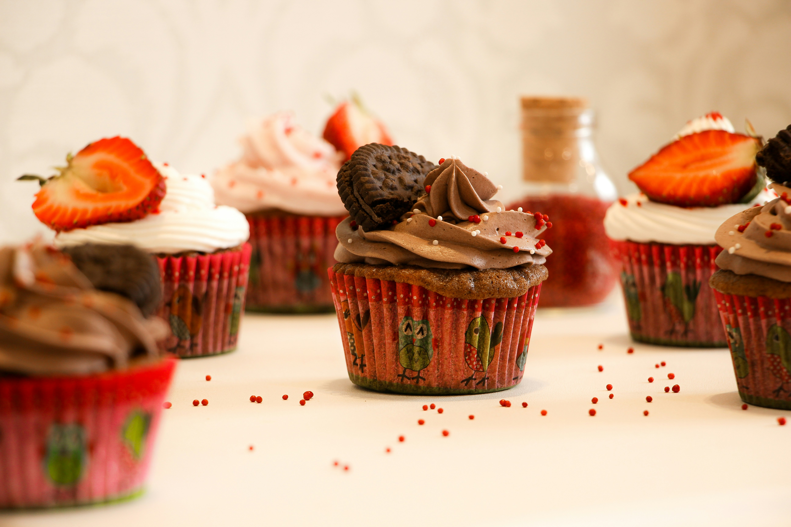

Get to know Sky High
Want to know more about what makes Sky High Bakery different? Take a look at what we are all about.

Our Craft
At Sky High Bakery, our team is specially trained in the art of combining delicious baked goods with cannabis to create something truly unique. Every product is carefully prepared with attention to quality, consistency, and presentation, so our customers can enjoy a treat they can feel good about. For us, it is more than just baking. It is about creating a moment to slow down, relax, and treat yourself for once. From the first mix to the final bite, we put care into every product and take our craft to another level.
Our Commitment
 At Sky High Bakery, we don't believe in sending anyone home disappointed. Our mission is simple: great taste, good vibes, and a smile on your face after every visit.
We put serious effort into making every treat delicious, consistent, and worth coming back for. Whether you're here for a little pick-me-up or just an excuse to treat yourself, we've got you covered.
Come hungry, leave happy, and maybe don't make any important decisions until after dessert.
At Sky High Bakery, we don't believe in sending anyone home disappointed. Our mission is simple: great taste, good vibes, and a smile on your face after every visit.
We put serious effort into making every treat delicious, consistent, and worth coming back for. Whether you're here for a little pick-me-up or just an excuse to treat yourself, we've got you covered.
Come hungry, leave happy, and maybe don't make any important decisions until after dessert.
Your Wellbeing

At Sky High Bakery, we believe everyone deserves a chance to relax, switch off, and enjoy a little treat.S Our cannabis-infused baked goods are made to give you a chance to slow down and enjoy the moment after a long day. Whether you're feeling stressed, need some time to yourself, or just want something tasty to enjoy, we're here to help you take a break from the everyday chaos. Life can be stressful enough, so why not sit back, relax, and enjoy a good treat? Just remember, we're bakers, not therapists.